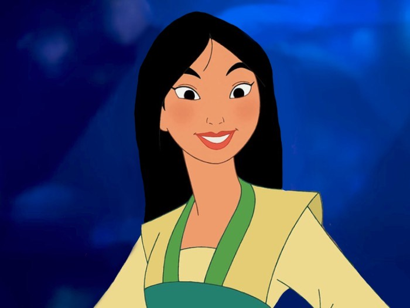
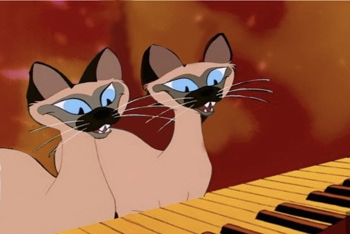
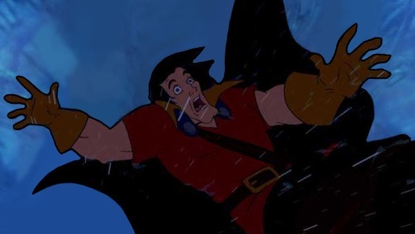

my project that contains the changes of issues that Disney had done over the years to adapt and change to do things the right way.
it depicts about the role of women back then and how many women had to do things a certain way and live up for certain standards at time as more will be shown in the link below. The combined images are Mulan with the main foreground and the background of Elsa's scene from Frozen 2.
this is the second topic concept of racism discussed with Disney's issuesit tells that disney had many badly decisions of trying to decide themselves what indigeous people were like and trying to do other races as well for stereotypes in their mindset. The scenes combined for the image is the foreground of the cats from Lady and the Tramp with the background as Aristocats dancing scene.
this is the final and third topic concept of dark moments that is discussed with Disney's issues as wellas disney over the years have been friendly for kids and not going over board with many issues, having villain deaths that struck out as Clayton from Tarzan and Gaston from Beauty and the beast did impact a lot of children at a young age. The images combined as the foreground of gaston from beauty and the beast falling from Beast's castle and the background of clayton's death scene as he also fell from the jungle vines wrapping around his neck.
